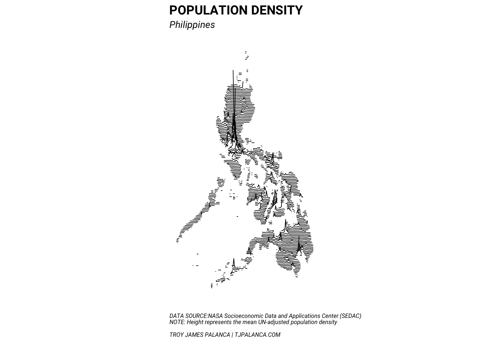

# Package loads
suppressPackageStartupMessages({
library(tidyverse)
library(stringr)
library(raster)
library(dplyr)
library(sf)
})
# Working directory setup
if (!str_detect(getwd(), "src")) setwd("src")Data is downloaded from NASA SEDAC here.
# Unzip NASA SEDAC file (must download separately)
if (!dir.exists("../dta/gpw-v4/")) {
unzip(
zipfile = "../dta/gpw-v4-population-density-adjusted-to-2015-unwpp-country-totals-2015.zip",
exdir = "../dta/gpw-v4/"
)
}
# Download GADM Province data for Philippines
if (!file.exists("../dta/PHL_adm1.rds")) {
download.file(
url = "http://biogeo.ucdavis.edu/data/gadm2.8/rds/PHL_adm1.rds",
destfile = "../dta/PHL_adm1.rds"
)
}Read in the data into memory and process them into the final formats.
# Philippines administrative boundaries
readRDS("../dta/PHL_adm1.rds") ->
philippines.spdf
# Read into memory (cropped to Philippines)
raster("../dta/gpw-v4/gpw-v4-population-density-adjusted-to-2015-unwpp-country-totals_2015.tif") %>%
crop(philippines.spdf) %>%
rasterToPoints(spatial = TRUE) %>%
intersect(philippines.spdf) %>%
setNames(c("popdensity_km", names(.)[2:length(names(.))])) ->
philippines_popd.spdf## Loading required namespace: rgeos# Fortify to data frame
philippines_popd.spdf %>%
st_as_sf() %>%
mutate(lng = map_dbl(geometry, ~.[[1]]),
lat = map_dbl(geometry, ~.[[2]])) %>%
as_data_frame() ->
philippines_popd.dfWe set up a general plotting function that:
plotPopulationDensityLines <-
function(df, lat_res, lng_res = lat_res, height = 5, lwd = 0.5, ...) {
# Plot the population density lines
#
# Arguments:
# df: data frame containing columns
# lat, lng, and popdensity_km
# lat_res: latitude resolution (to the nearest lat_res)
# lng_res: longitude resolution (to the nearest lng_res)
# height: maximum height (as factor of lat_res)
# lwd: line width of line
# ...: labels
#
# Effect:
# Plots the plot onto the relevant graphics device
df %>%
# Perform resolution changes
group_by(
lat = round(lat * (1/lat_res))/(1/lat_res),
lng = round(lng * (1/lng_res))/(1/lng_res)
) %>%
summarise(popdensity_km = mean(popdensity_km, na.rm = T)) %>%
ungroup() %>%
# Scale population density
mutate(popdensity_km = popdensity_km/max(popdensity_km, na.rm = T)) %>%
# Assign groups to split up islands
arrange(lat, lng) %>%
mutate(group = cumsum(
if_else(lat != lag(lat) |
lng - lag(lng) > lng_res * 1.00001 |
is.na(lag(lng)), 1L, 0L))) %>%
ggplot(aes(x = lng, group = group,
y = lat + lat_res * height * popdensity_km)) +
geom_path(lwd = lwd) +
coord_map() +
theme_bw(base_family = "Roboto") +
theme(
axis.title = element_blank(),
axis.ticks = element_blank(),
axis.text = element_blank(),
plot.title = element_text(face = "bold"),
plot.subtitle = element_text(face = "italic"),
panel.grid = element_blank(),
panel.border = element_blank(),
plot.caption = element_text(size = 6, face = "italic", hjust = 0)
) +
labs(
...,
caption = "
DATA SOURCE:NASA Socioeconomic Data and Applications Center (SEDAC)
NOTE: Height represents the mean UN-adjusted population density
TROY JAMES PALANCA | TJPALANCA.COM
"
)
}philippines_popd.df %>%
plotPopulationDensityLines(
lat_res = 0.06,
lng_res = 0.05,
height = 50,
lwd = 0.3,
title = "POPULATION DENSITY",
subtitle = "Philippines"
) -> philippines.gg
ggsave(
plot = philippines.gg, dpi = 300,
filename = "../out/01-philippines.png"
)## Saving 7 x 5 in imagephilippines.gg
philippines_popd.df %>%
filter(NAME_1 %in% c(
"Metropolitan Manila",
"Laguna", "Cavite", "Rizal", "Bulacan"
)) %>%
plotPopulationDensityLines(
lat_res = 0.008,
lng_res = 0.01,
height = 20,
lwd = 0.3,
title = "POPULATION DENSITY",
subtitle = "Greater Manila Area"
) -> gma.gg
ggsave(
plot = gma.gg, dpi = 300,
filename = "../out/02-greater-manila-area.png"
)## Saving 7 x 5 in imagegma.ggphilippines_popd.df %>%
filter(NAME_1 == "Cebu") %>%
plotPopulationDensityLines(
lat_res = 0.01,
lng_res = 0.01,
height = 20,
lwd = 0.3,
title = "POPULATION DENSITY",
subtitle = "Cebu"
) -> cebu.gg
ggsave(
plot = cebu.gg, dpi = 300,
filename = "../out/03-cebu.png"
)## Saving 7 x 5 in imagecebu.ggphilippines_popd.df %>%
filter(NAME_1 == "Davao del Sur") %>%
plotPopulationDensityLines(
lat_res = 0.01,
lng_res = 0.01,
height = 50,
lwd = 0.3,
title = "POPULATION DENSITY",
subtitle = "Davao"
) -> davao.gg
ggsave(
plot = davao.gg, dpi = 300,
filename = "../out/04-davao.png"
)## Saving 7 x 5 in imagedavao.ggphilippines_popd.df %>%
filter(NAME_1 %in% c(
"Albay", "Camarines Norte", "Camarines Sur",
"Masbate", "Sorsogon", "Catanduanes"
)) %>%
plotPopulationDensityLines(
lat_res = 0.01,
lng_res = 0.01,
height = 65,
lwd = 0.2,
title = "POPULATION DENSITY",
subtitle = "Bicol Region"
) -> bicol.gg
ggsave(
plot = bicol.gg, dpi = 300,
filename = "../out/05-bicol.png"
)## Saving 7 x 5 in imagebicol.gg